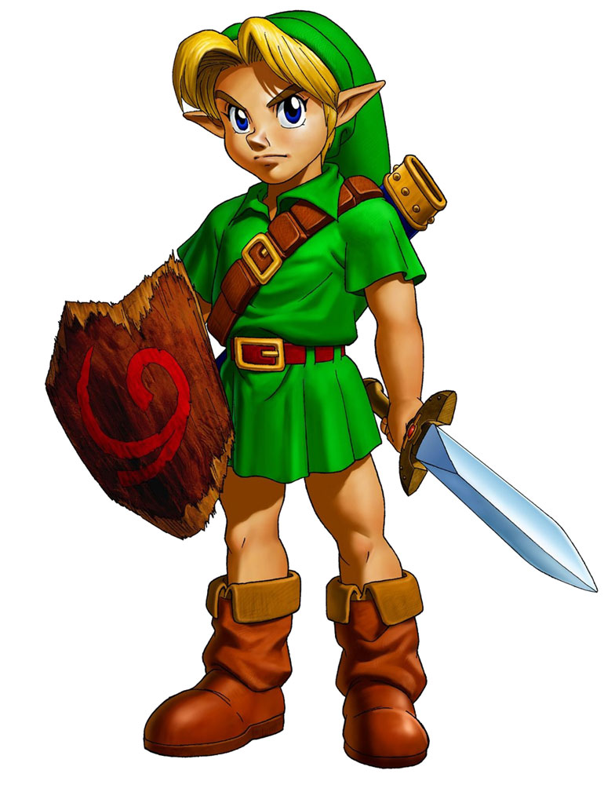

The Legend of Zelda: Breath of the Wild
Un hito en los juegos de aventura de mundo abierto. En este título, la libertad es total y el mundo de Hyrule se convierte en el protagonista principal.

A diferencia de otros géneros, la aventura se centra en la narrativa, la resolución de acertijos y la exploración de entornos desconocidos.
Un hito en los juegos de aventura de mundo abierto. En este título, la libertad es total y el mundo de Hyrule se convierte en el protagonista principal.
